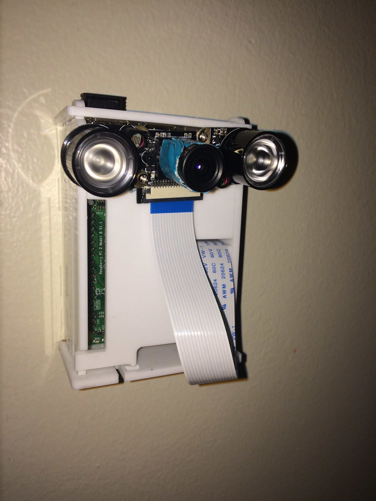
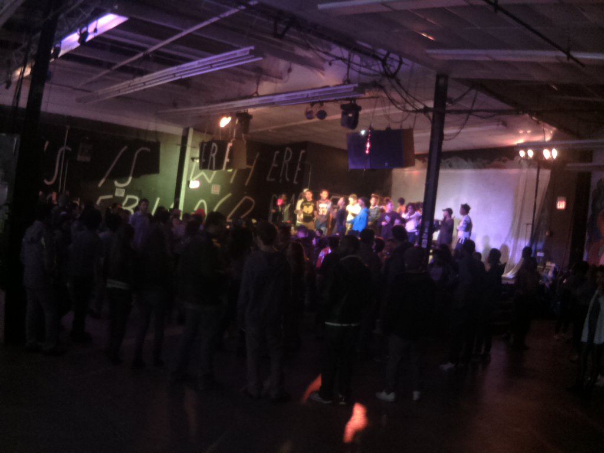

design/animation
Media for Bands
video
Breathing Lyrics Video
He's A Battered Wife
Windows 2015
PTV Cribs
Our Mission
How To Fix A Broken iPhone 4s
frdy/strdy
installation
K-25 History Center (AMES)
Visible Results, Invisible Feel
Candle Videotape I
Venetian Blinds
Burn Baby, Burn
Untitled Lenticular Print
Is The Stood Lit?
olivia battell
/
about
/
photos
Raspberry Pi project utilizing camera, timer, and twitter. Every 15 minutes sends a photo to @isthestoodlit on twitter of events happening in Purchase's Student Center. 2015
Tweets by @isthestoodlit
 